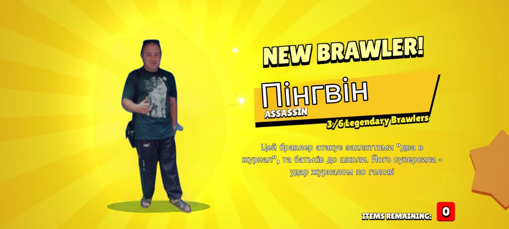
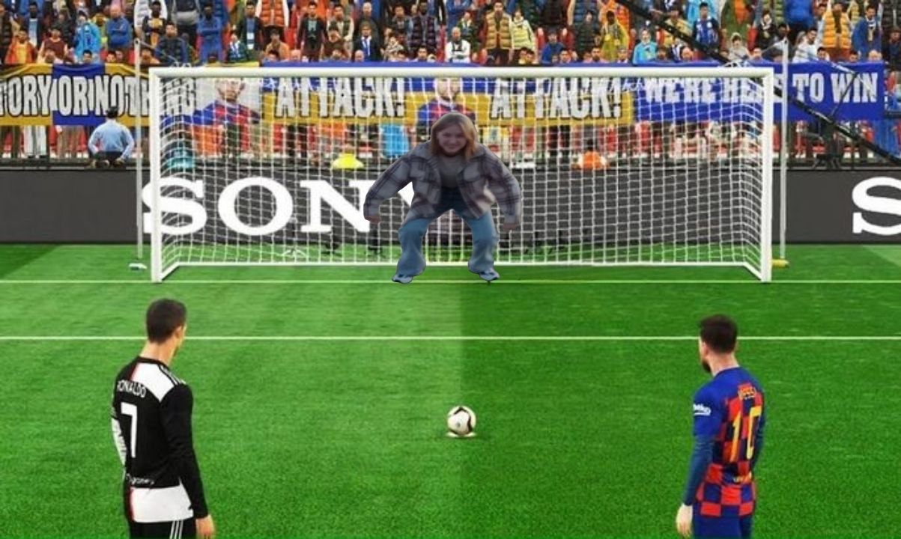
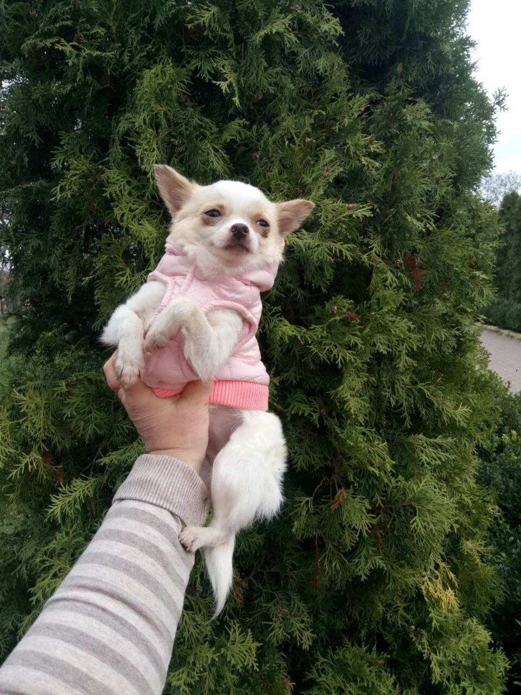
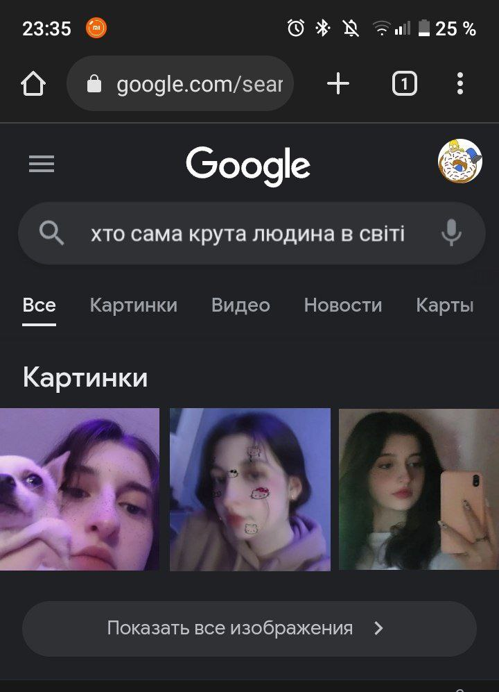
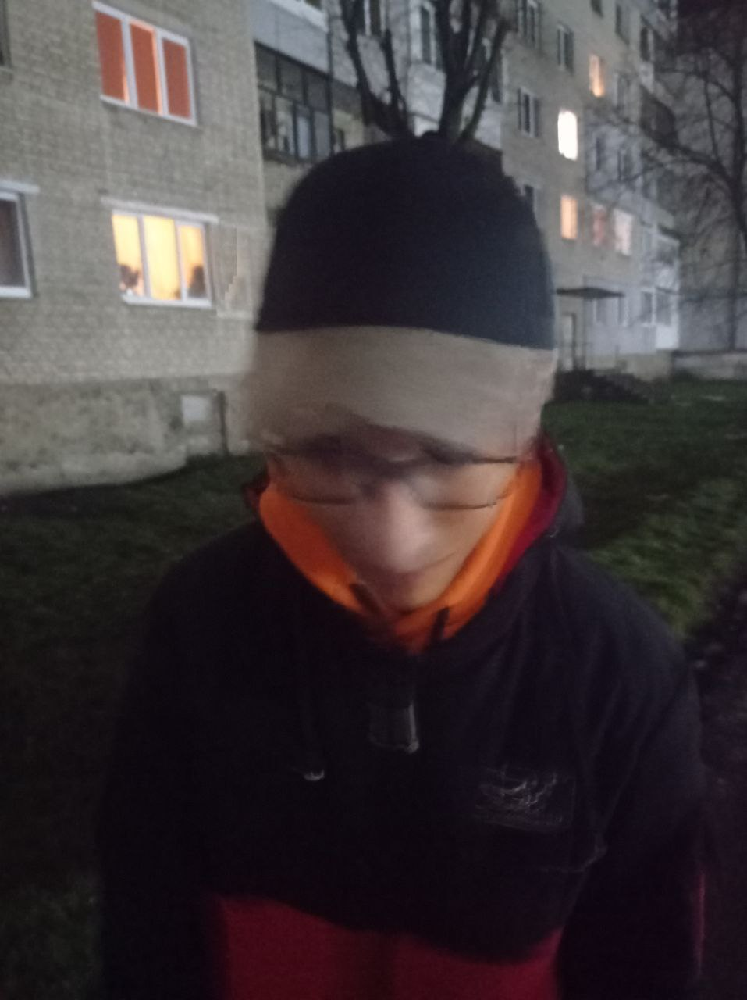

У нас сьогодні вже 5-ти місячниця, ахуїть, да? і я вахуі
ну корочі, хочеться сказать спасіба, шо ти така крута, постійна
слухаєш, розказуєщ, питаєш, цікавишся, радиш, ну вот це все короче, ну ти пон,
а також вже на носі новий рік, тоже нармана так якшо подумать, общаємось ше з літа,
і аж до нового року, рекорд по общенію напевно взазза (і да, я почав вживать суржик, пон)
А тепер після того як я нарадував очки цим шедевром, трошки історії. Почнем з того, як я тобі показував свої навички фотошопу, і це було 30.07 да
Це пінгвінчик як ти казала, я ше досі його помню
а це твая подружка, яка обіцяла мене найти в переулочку, но я гарно ховаюсь
Дальше ти мені показала даму, про яку я не можу забуть по цей день, і вона мені не виходить з голови, і це вона
А це шо я побачив коли рішив загуглить про тебе
А це я проста по пріколу вставив звзвзазхах

І це все шо я цікаве найшов, остальне все в переписці і гс, а слухать 5к гс і читать 85к повідомлень я ні хатю, я краще серіальчик подивлюсь, хіба шо можу сказать шо 24 листопада якшо не помиляюсь ти кушала маї чікалядки взхахах, і я радий шо тобі було вкусна і пріятна
ну блін, крч, вот цей картузик дуже радий шо знає таку супір-пупір дівчинку як ти, і передає тобі вітання з 5-ою місячницею, і він каже що вже не дивується стільком цим вашим місячницям, но він вже німає більше ідей для привітання на наступні вхахвхах
